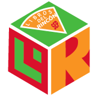

<nav id="sidebar-proceso">
    <div class="sidebar-header">
        
    </div>

    <ul class="list-unstyled components">
        <a [routerLink]="[ '/proceso']"><p>PROCESO DE SELECCIÓN</p></a>
        <li routerLinkActive="active">
            <a [routerLink]="[ '../Sobreproceso']" routerLinkActive="active">Sobre el proceso de selección</a>
        </li>
        <li routerLinkActive="active">
            <a [routerLink]="[ '../Ingresomat']" routerLinkActive="active">Ingreso de Materiales</a>
        </li>
        <li routerLinkActive="active">
            <a [routerLink]="[ '../Preseleccion']" routerLinkActive="active">Preeselección</a>
        </li>
        <li routerLinkActive="active">
            <a [routerLink]="[ '../Seleccion']" routerLinkActive="active">Selección</a>
        </li>
    </ul>
</nav>